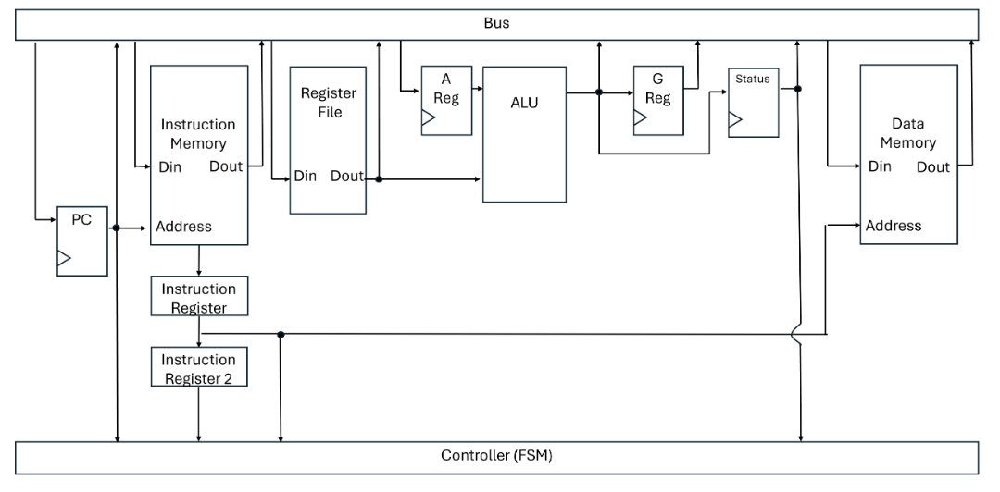

DIGITAL DESIGN / COMPUTER ARCHITECTURE
Designed and implemented a 16-bit processor using Verilog, exploring digital logic, datapath architecture, instruction execution and hardware verification.
Designed and implemented a 16-bit processor using Verilog hardware description language (HDL). The processor integrates a datapath, control unit, registers and arithmetic logic unit to execute instructions through a coordinated hardware architecture.
The processor consists of several interconnected hardware components responsible for instruction processing and execution.

The processor was implemented using modular Verilog code, allowing individual hardware components to be developed and tested independently before integration.
Verilog testbenches and simulation were used in GTKWave to verify the behaviour of the processor, timing issues and individual components. Used Quartus (itegrated IDE) to push Verilog design onto FPGA board. This project used the DE1-SoC FPGA board.